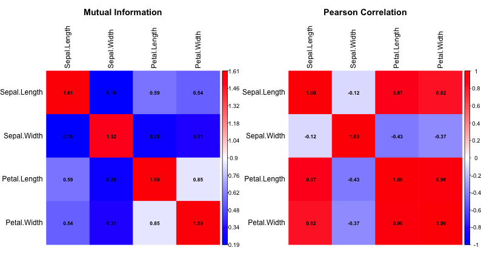

Mutual Information: What, Why, How, and When
Introduction
When exploring dependencies between variables, the data scientist’s toolbox often relies on correlation measures to reveal relationships and potential patterns. But what if we’re looking to capture relationships beyond linear correlations? Mutual Information (MI) quantifies the “amount of information” shared between variables in a more general sense. It measures how much we know about \(Y\) by observing \(X\). This approach goes beyond linear patterns and can help us uncover more complex relationships within data.
MI can be especially helpful for applications such as feature selection and unsupervised learning. For readers familiar with various types of correlation metrics, Mutual Information provides an additional lens to interpret relationships within data.
In this article, I’ll guide you through the concept of Mutual Information, its definition, properties, and usage, as well as comparisons with other dependency measures. We’ll explore MI’s mathematical foundations, its advantages and limitations, and its applications, concluding with an example demonstrating MI’s behavior alongside more traditional measures like Pearson’s correlation.
Notation
Before diving deeper, let’s establish our notation:
- Random variables will be denoted by capital letters (\(X\), \(Y\)).
- Lowercase letters (\(x\),\(y\)) represent specific values of these variables.
- \(p(x)\) denotes the probability mass/density function of \(X\).
- \(p(x,y)\) represents the joint probability mass/density function of \(X\) and \(Y\).
- \(p(x\mid y)\) is the conditional probability of \(X\) given \(Y\).
- \(H(X)\) represents the entropy of random variable \(X\).
These should not surprise anyone, as they are standard conventions in most statistics textbooks.
A Closer Look
Refresher on Entropy
Mutual Information is related to the notion of entropy, a measure of uncertainty or randomness in a random variable. In less formal terms, entropy quantifies how “surprising” or “unpredictable” the outcomes of \(X\) are.
Formally, for a discrete random variable \(X\) with possible outcomes \(x_1, x_2, \dots, x_n\) and associated probabilities \(p(x_1), p(x_2), \dots, p(x_n)\), entropy \(H(X)\) is defined as:
\[H(X) = -\sum_{i=1}^n p(x_i) \log p(x_i).\]
For continuous variables we switch the summation with an integral.
Entropy equals \(0\) when there’s no uncertainty, such as when \(X\) always takes a single outcome. High entropy means greater uncertainty (many possible outcomes, all equally likely), while low entropy indicates less uncertainty, as some outcomes are much more likely than others. In essence, entropy tells us how much “information” is gained on average when observing the variable’s realization.
Mathematical Definitions of MI
MI can be defined in multiple ways. Perhaps the most intuitive definition of MI between two random variables \(X\) and \(Y\) is that it measures the difference between the joint distribution and the product of their marginals. If two random variables are independent, their joint distribution is the product of their marginals \(p(x,y)=p(x)p(y)\). In some sense, the discrepancy between these two objects (i.e., the two sides of the equality) measures the strength of association between \(X\) and \(Y\) (i.e., their “independence”).
Formally, MI is the Kullback-Leibler divergence between the joint distribution and the product of the two marginals:
\[ MI(X,Y) = D_{KL} (p(X,Y) || p(X)p(Y)). \]
Let’s now examine MI from a different angle. We can express mutual information as follows:
\[ MI(X,Y) = \sum_{x \in X} \sum_{y \in Y} p(x,y) \log \left(\frac{p(x,y)}{p(x)p(y)}\right)\]
Again, for continuous variables, the sums become integrals.
Alternatively, MI can also be expressed in terms of entropy. It equals the sum of the entropy of \(X\) and \(Y\) taking away their joint entropy:
\[ \begin{align*}MI(X,Y) & = H(X) - H(X|Y) \\ & = H(Y) - H(Y|X) \\ & = H(X) + H(Y) - H(X,Y).\end{align*} \]
You can compute MI in R with the infotheo package.
Software Package: infotheo.
Properties
MI has several intriguing properties:
- Non-negativity: \(MI(X;Y) \geq 0\). Mutual Information is always non-negative, as it measures the amount of information one variable provides about the other. Higher values correspond to stronger association.
- Symmetry: \(MI(X,Y) = MI(Y,X)\). This symmetry implies that the information \(X\) provides about \(Y\) is the same as what Y provides about X.
- Independence: Similarly to Chatterjee’s correlation coefficient, \(MI(X,Y) = 0\) if and only if \(X\) and \(Y\) are independent.
- Scale-invarance: Mutual information is scale invariant. If you apply a scaling transformation to the variables, their MI will not be affected.
Conditional MI
Conditional Mutual Information (CMI) extends the concept of MI to measure dependency between \(X\) and \(Y\) given a third variable \(Z\). CMI is useful for investigating how much information \(X\) and \(Y\) share independently of \(Z\). It is defined as:
\[MI(X,Y|Z) = \sum_{x,y,z} p(x,y,z) \log \left(\frac{p(x,y|z)}{p(x|z)p(y|z)}\right). \]
This can be valuable in causal inference, where understanding dependencies conditioned on specific variables aids in interpreting relationships within complex models. CMI is also particularly useful for feature selection when accounting for redundancy among already included features. Let’s explore this idea in greater detail.
Feature Selection with MI
In machine learning, MI serves as a useful metric for feature selection (Brown et al. 2012, Vergara and Estévez 2014). Consider an outcome variable \(Y\) and a set of features \(X\in\mathbb{R}^p\) with n i.i.d. observations. By evaluating the MI between each feature and the target variable, one can retain features with the highest information content, passing a certain threshold. This is somewhat primitive since it assumes independence across features. More sophisticated approaches take feature dependency into account.
For instance, methods like Minimum Redundancy Maximum Relevance (mRMR, Peng et al. 2005) aim to maximize the relevance of features to the target while minimizing redundancy among features. Here is a concise version of the mRMR algorithm:
- Calculate MI between each feature and the target (relevance).
- Calculate MI between features (redundancy).
- Select features that maximize relevance while minimizing redundancy: \[ \text{mRMR} = \max_{X_i} \left[MI(X_i;Y) - \frac{1}{|S|} \sum_{X_j \in S} MI(X_i;X_j)\right], \]
where \(S\) is the set of already selected features.
Pros and Cons
Like any other statistical tool, mutual Information has several advantages and limitations. On the positive side, it captures both linear and nonlinear relationships, is scale-invariant, and works with both continuous and discrete variables, making it a theoretically well-founded measure. However, it requires density estimation for continuous variables, can be computationally intensive for large datasets, and its results can be sensitive to binning choices for continuous variables. Additionally, there is no standard normalization for MI.
An Example
Let’s implement MI calculation in R and python and compare it with traditional correlation measures using the iris dataset.
rm(list=ls())
library(infotheo)
library(corrplot)
library(dplyr)
data(iris)
# Calculate mutual information matrix
mi_matrix <- mutinformation(discretize(iris[,1:4]))
# Calculate correlation matrix
cor_matrix <- cor(iris[,1:4])
# Compare MI vs Correlation for Sepal.Length and Petal.Length
mi_value <- mi_matrix[1,3]
cor_value <- cor_matrix[1,3]
# Print results
print(paste("Mutual Information:", round(mi_value, 3)))
print(paste("Pearson Correlation:", round(cor_value, 3)))
>[1] "Mutual Information: 0.585"
>[1] "Pearson Correlation: 0.872"import pandas as pd
import numpy as np
from sklearn.preprocessing import KBinsDiscretizer
from sklearn.metrics import mutual_info_score
import seaborn as sns
import matplotlib.pyplot as plt
# Load dataset
iris = sns.load_dataset('iris')
# Discretize the dataset (except the target variable)
X = iris.iloc[:, :-1]
est = KBinsDiscretizer(n_bins=10, encode='ordinal', strategy='uniform')
X_discretized = est.fit_transform(X)
# Calculate mutual information matrix
mi_matrix = np.zeros((X.shape[1], X.shape[1]))
for i in range(X.shape[1]):
for j in range(X.shape[1]):
mi_matrix[i, j] = mutual_info_score(X_discretized[:, i], X_discretized[:, j])
# Calculate correlation matrix
cor_matrix = X.corr()
# Compare MI vs Correlation for Sepal.Length and Petal.Length
mi_value = mi_matrix[0, 2] # Sepal.Length vs Petal.Length
cor_value = cor_matrix.iloc[0, 2] # Sepal.Length vs Petal.Length
# Print results
print(f"Mutual Information: {mi_value:.3f}")
print(f"Pearson Correlation: {cor_value:.3f}")
> Mutual Information: 0.905
> Pearson Correlation: 0.872
The left matrix displays the MI results and the right one shows the standard (Pearson) correlation values. The default scales are different, so one should compare the values and not the colors. Indeed, the variable pairs with negative linear correlation also have the lowest MI values.
This example demonstrates how MI can capture nonlinear relationships that might be missed by traditional correlation measures.
Bottom Line
Mutual Information provides a comprehensive measure of statistical dependence, capturing both linear and nonlinear relationships.
Unlike correlation coefficients, MI works naturally with both continuous and categorical variables.
MI serves as the foundation for sophisticated feature selection algorithms like mRMR.
Where to Learn More
Wikipedia is a great place to start and learning the basics. Brown et al. (2012) and Vergara and Estévez (2014) are the go-to resources for conditional MI and using MI for feature selection.
References
Brown, G., Pocock, A., Zhao, M. J., & Luján, M. (2012). Conditional likelihood maximisation: a unifying framework for information theoretic feature selection. JMLR.
Cover, T. M., & Thomas, J. A. (2006). Elements of information theory (2nd ed.). Wiley-Interscience.
Kraskov, A., Stögbauer, H., & Grassberger, P. (2004). Estimating mutual information. Physical Review E, 69(6).
Peng, H., Long, F., & Ding, C. (2005). Feature selection based on mutual information criteria of max-dependency, max-relevance, and min-redundancy. IEEE TPAMI.
Ross, B. C. (2014). Mutual information between discrete and continuous data sets. PloS one, 9(2).
Vergara, J. R., & Estévez, P. A. (2014). A review of feature selection methods based on mutual information. Neural Computing and Applications, 24(1).